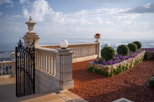
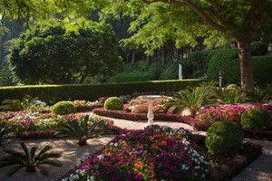
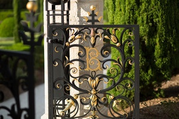
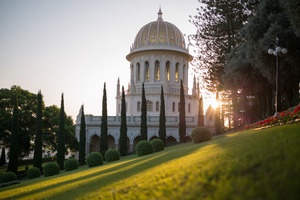
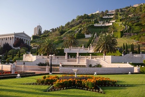
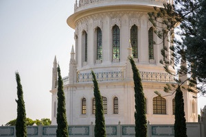
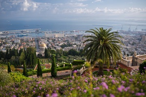
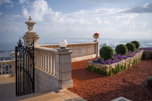
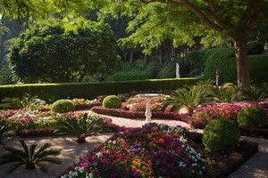
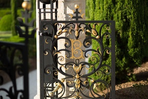

|  |  |

|
 |
Всемирное наследие ЮНЕСКО
Святые места Бахаи в Хайфе и на западе Галилеи были занесены в Список всемирного наследия ЮНЕСКО в 2008 г. как свидетельства давней традиции паломничества бахаи и за их глубокое значение для веры. В объект входят 26 построек, памятников и городищ, образующих одиннадцать отдельных комплексов в Акре и Хайфе. Все они связаны с именами отцов-основателей культа. Среди прочих, здесь сохранились усыпальница Бахауллы в Акре и мавзолей Баба. Кроме того, на территории объекта имеются дома, сады, кладбище и целый ряд современных зданий неоклассического стиля, в которых размещается администрация, архивы и исследовательские центры.
|  |  |  |  |
Бахаи (бахаизм, бехаизм)— монотеистическая религия, основанная Бахауллой (1817—1892), который почитается как последний в ряду «явлений Бога», который, помимо Бахауллы, включает Авраама, Моисея, Будду, Заратустру, Кришну, Иисуса Христа, Мухаммеда, Баба. Учение бахаи основано на учениях Баба и Мирзы Хусейн Али (назвавшегося Бахауллой). Главные темы: единство Бога, единство религий и единство человечества. Напоминая об аналогичных учениях прежних явлений Бога, Бахаулла заявляет, что существует только одна религия — «неизменная вера Божия, вечная в прошлом, вечная в грядущем». Бахаи считают свою религию последней мировой монотеистической религией откровения.
В 1909 г., почти через 60 лет после смерти, останки Баба, которого считают посланником бога и предтечей Бахауллы, были перезахоронены в мавзолее на склоне горы Кармель в Хайфе. Позднее над мавзолеем была возведена мраморная надстройка. Подготовка проекта была поручена архитектору У. Максвеллу, сумевшему совместить восточные традиции с западными пропорциями и стилем. Наконец, в 1953 г. все работы были завершены, и широкой публике открылась колоннада с золочённым куполом, которому суждено было стать визитной карточкой Бахайских садов, а потом и всей Хайфы.
Террасы олицетворяют собой первых восемнадцать учеников Баба, названных «Буквами Живого», хотя ни одна конкретная терраса и не связана с отдельной Буквой
Основную геометрию восемнадцати террас обеспечивают девять концентрических кругов. Подобно тому, как идентификация круга предполагает наличие центра, так и террасы были задуманы как порожденные из Храма Баба. Восемнадцать террас и одна терраса Храма Баба в общей сложности составляют девятнадцать террас. Девятнадцать — знаковое число в религиях Бахаи и Баби
|  |  |
|
 |
Фариборз Сахба начал работу в 1987 году, проектируя сады и осуществляя надзор за строительством. Террасы были открыты для публики в июне 2001 года. Начиная от основания, сады простираются почти на один километр вверх по склону горы Кармель, покрывая около 200 000 квадратных метров земли. Сады соединены между собой лестницей, по бокам которой два потока струящейся воды спускаются по склону горы через ступени и мосты террасы
В садах есть элементы персидских райских садов, которые изолируют участок от шума окружающей среды и соединяют Здания Всемирного центра бахаи на горе Кармель вместе
Святыни бахаи «являются первыми объектами, связанными с относительно новой религиозной традицией, которые были включены в Список всемирного наследия. . " Комитет всемирного наследия ЮНЕСКО считает, что эти места имеют «выдающуюся универсальную ценность [и] ... отмечены свидетельством, которое они вносят в сильную традицию паломничества бахаи, и их глубокое значение для веры».
Террасы олицетворяют собой первых восемнадцать учеников Баба, названных «Буквами Живого», хотя ни одна конкретная терраса и не связана с отдельной Буквой